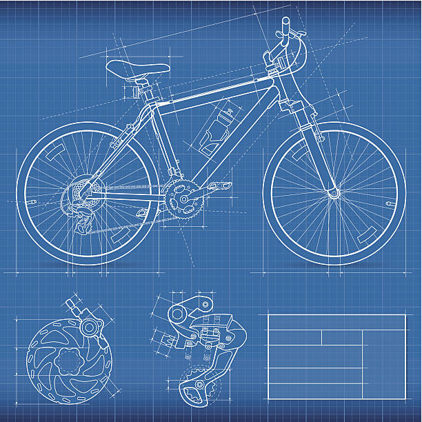

Monday-Friday
10am-5pm
111-111-1111
"Bike is love, bike is life." - Socrates
Fictional Bike Store is a full-service and completely real store sponsored by the fictional location's university. We are dediated to supporting the local fictional location's community with a sustainable, and importantly, incredibly cool, means of transportation around the campus. Residing on real street off of the real blue river, Fictional Bike Store serves to provide bikes, biking equipment, and repairs for all of your cycling needs.
A beautiful photo of the campus.
Back in October of 1989, John Pork began a volunteer project to upcycle abandoned bicycles out of his love for the world's greatest technology. Working out of his dorm room, Pork sold and rented out bikes to fellow students. With great success, Pork pruchased his own location on campus after graduation to continue his work. To this day, Pork is remembered for his heroism and support to the local community. Below is a document of Pork's original bike designs. You can see this original piece framed in the store!
We are located just 400 feet from the blue river off of real street's bridge. Our entrance faces the river across from river building.
GPS Coordinates:
Latitude: 42°43’40.55″ N
Longitude: 84°28’43.32″ W
Nope! Just come right in. Bring your bike or mobility device if you need repair. If it is simple, we can fix it while you wait, otherwise you will leave the bike with us for a short time until we are able to complete the repair.
Unfortunately, Mr. Pork is on vacation, so no.